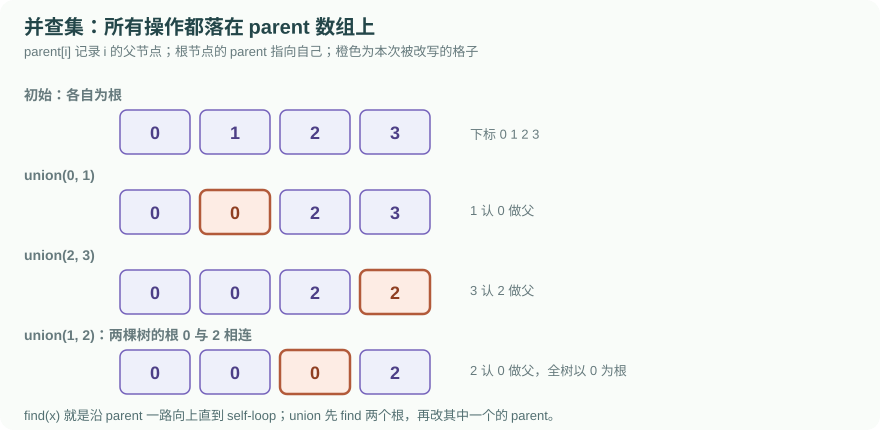
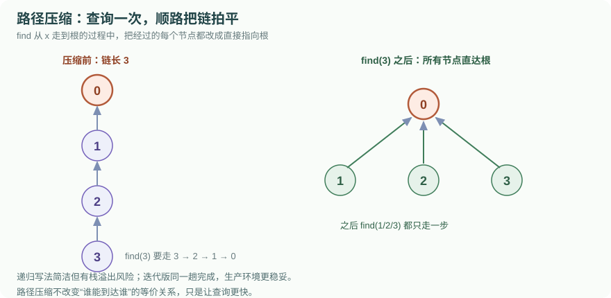
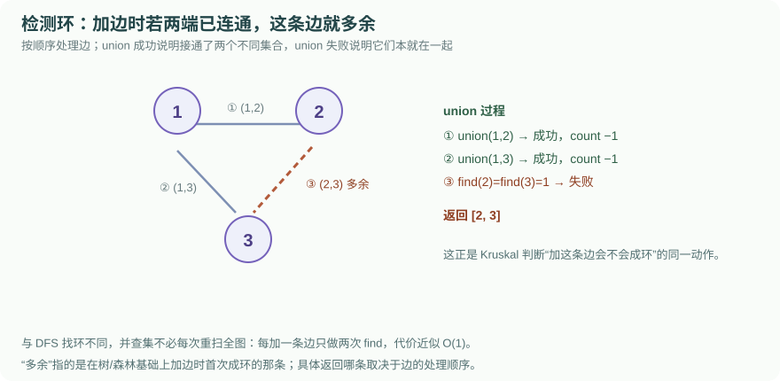

并查集：动态连通性的近常数解法
“A 和 B 是朋友，B 和 C 是朋友，A 和 C 是否同属一个圈子？”如果边会不断新增、问题会被反复问，每次做一遍 DFS 就太慢了。并查集用几十行代码把“合并”和“查询”都做到接近 O(1)。
动态连通性：为什么不用每次 DFS
设想一个社交平台：用户之间不断新增好友关系，同时要频繁回答“这两个用户是否属于同一个社交圈”。把用户当顶点、好友关系当边，这个问题就是图的连通性。如果每次查询都跑一遍 DFS/BFS，最坏要扫完整张图，代价 O(n+m)；而边还会不断增加，重复遍历非常浪费。
关键在于这类问题只需要两种信息：把两个集合合起来，以及判断两个元素是否已在同一集合。它并不要求给出两人之间的具体关系链。只要能高效维护这两件事，就能把查询降到接近常数——这就是并查集（Disjoint Set Union / Union-Find）。
它把“集合”表示成一个森林：每个节点记住自己的父节点，根节点代表整个集合。问某个元素属于哪个集合，就沿父指针找到根；合并两个集合，就让一个根认另一个根做父。接下来先把这个朴素版本写出来，再逐步优化。
两个操作：find 与 union
并查集用一个 parent 数组保存父指针。初始化时 parent[i] = i，每个元素自成一派。两个核心操作：find(x) 沿父指针向上直到根；union(x, y) 先找到两个根，若不同就把一个根挂到另一个根下。

class UnionFind:
def __init__(self, n):
self.parent = list(range(n)) # 初始时各自为根
def find(self, x):
while self.parent[x] != x: # 一路向上找根
x = self.parent[x]
return x
def union(self, x, y):
rx, ry = self.find(x), self.find(y)
if rx != ry:
self.parent[rx] = ry # 把一棵树挂到另一棵下
return True
return False # 已经连通看懂这一段就抓住了全部直觉：问“属于哪一帮”就找根，合并“两帮”就让一个根认另一个做父。但朴素实现有个隐患：如果始终把一个根挂到另一个根下，树可能变成一条长链，find 退化为 O(n)。下面两节分别从“查询”和“合并”两个角度修补。
路径压缩：查询时顺手拍平
解决长链的办法很巧妙：在 find 的过程中，把路径上经过的每个节点都改成直接指向根。这一次 find 可能多走了几步，但下次再查同一批节点就只需一步。而且它不改变“谁能到达谁”的等价关系，只让树变扁。

def find(self, x):
root = x
while self.parent[root] != root: # 先找到根
root = self.parent[root]
while self.parent[x] != root: # 再把路径上节点改指根
self.parent[x], x = root, self.parent[x]
return root递归写法更短（parent[x] = find(parent[x])），但路径长时有栈溢出风险；上面这种迭代写法生产环境更稳妥。路径压缩把单次 find 的摊还代价大幅降低，但它单独用仍不保证最坏情况——还需要配合下一节的合并策略。
按秩合并与近似常数
既然要挂树，就选一种更聪明的挂法：总是把矮的树挂到高的树下面，这样合并后树高不会增加。这个“高”用 rank 数组记录（通常取树高或节点数的上界），叫做按秩合并（union by rank）。
def union(self, x, y):
rx, ry = self.find(x), self.find(y)
if rx == ry:
return False
if self.rank[rx] < self.rank[ry]:
rx, ry = ry, rx # 让 rx 为较高的根
self.parent[ry] = rx # 矮树挂到高树下
if self.rank[rx] == self.rank[ry]:
self.rank[rx] += 1 # 同高时合并后高度加一
return True按秩合并单独使用，能让树高保持在 O(log n)；路径压缩单独使用，能把摊还代价降到接近 O(log n)。两者同时使用时，单次操作的摊还复杂度是 O(α(n))，其中 α 是反阿克曼函数。阿克曼函数增长极快，所以它的反函数增长极慢——在几乎所有实际可及的规模下，α(n) 都不超过 5。因此工程上可以把它当成近似常数。
逐步观察 union 后的父数组
对 0..4 依次做 union(0,1)、union(2,3)、union(1,2)，拖动滑块查看每一步的 parent。
“近似常数”不是一个可以拿秒表验证的固定值，而是对操作次数与树高的渐进结论；具体单次快慢仍取决于数据。这一点必须与“实测耗时”区分开。
经典题：连通分量、岛屿、冗余连接
省份数量（LeetCode 547）：给定 n×n 的相连矩阵，求连通分量个数。只需遍历上三角，对相连的城市 union，最后数一下有多少个不同的根（即还剩多少个集合）。
def count_provinces(is_connected):
n = len(is_connected)
uf = UnionFind(n)
for i in range(n):
for j in range(i + 1, n):
if is_connected[i][j]:
uf.union(i, j)
return uf.count # 维护的集合数就是省份数岛屿数量（LeetCode 200）：把每个陆地格子看成一个元素，向右、向下与相邻陆地 union，最后统计为“1”且是根的格子数。与省份数量是同一思路，只是把二维坐标映射成一维下标。
冗余连接（LeetCode 684）：在一棵树上多加一条边，找出多余的那条。这就是并查集检测环的看家本领：逐条加边，若某条边两端已在同一集合，它就是多余的。这也正是 Kruskal 在加边前的同一个判断（第 13 章）。

def find_redundant_connection(edges):
n = max(max(u, v) for u, v in edges)
uf = UnionFind(n + 1) # 节点从 1 编号
for u, v in edges:
if not uf.union(u, v): # 已连通：这条边多余
return [u, v]
return []并查集 vs DFS/BFS
两种方法都能判断连通性，但适用场景不同：
| 维度 | 并查集 | DFS / BFS |
|---|---|---|
| 适合的场景 | 边会动态新增，且要反复查询 | 图给定不变，一次遍历 |
| 单次查询 | O(α(n))，近似常数（摊还） | O(n+m)，每次都要重扫 |
| 空间 | O(n) | O(n+m)，需要建邻接表 |
| 能否给出具体路径 | 不能，只知道是否同组 | 能，可重建路径 |
| 能否检测环 | 能（union 失败即环） | 能（遇到已访问节点） |
一句话：如果只需要“合并 + 是否同组”，并且合并会不断发生，选并查集；如果需要具体路径、或者图基本不变只需一次性遍历，DFS/BFS 更直接。
边界：不能断开、要离线
并查集擅长合并，但有几个必须记住的限制：
- 不支持断开：一旦 union，就没办法“删边”。需要频繁断开的场景要改用动态图或 Link-Cut Tree 等结构。
- 不记录路径：find 只能告诉你“是否同组”，无法给出两人之间的好友链。
- 难以回滚到历史版本：普通并查集不具有可持久化能力；需要“查询某个历史时刻的连通性”时，要改用可持久化并查集（实现复杂得多）。
- 带权/带偏移的需求要另做：若除了连通还要维护“到根的距离”等关系（如带权并查集），需要在 parent 之外再存一个偏移量，不能直接套上面的模板。
回看整条优化路径：朴素实现 O(n) → 路径压缩近似 O(log n) → 加按秩合并且 O(α(n))。并查集代码不到二十行，却能达到理论上的渐进最优，是“简单思路 + 两个关键优化”的典型例子。下一章进入另一个区间查询的强工具：线段树与树状数组。
带走三个判断准则
- 问题只需“合并”和“查询是否同组”，不要求找出具体路径——这正是并查集的适用面。
- 路径压缩和按秩合并一起用，单次操作摊还复杂度是 O(α(n))，可近似当作常数。
- 并查集只加不减：需要“断开连接”或“查询历史版本”的场景，要换其他结构。
继续学习与校验资料
- Disjoint-set data structure — 路径压缩、按秩合并与反阿克曼界
- cp-algorithms: Disjoint Set Union — 迭代实现与多个变体
- 第 13 章：图算法 — Kruskal 用并查集判环
- 运行参考：
examples/union_find.py；测试：tests/test_union_find.py